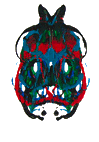
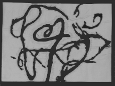
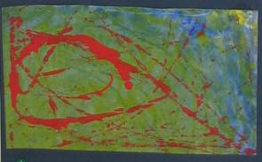

Art
Classes with Helen Savage |
|
CHRISTCHURCH, NEW ZEALAND CLOSED FOR 2014
|


|

|

|
TEACHING
PHILOSOPHY |
|
Ideas & Thoughts – Re: Colour Collision Tapping into my earliest memories of colour I can see and physically evoke the solid plastic colours of cars. Solid yellows, lime greens, baby blue. I also remember the blue-blue of the sea glimpsed from the car window as we wound our way slowly around the coastal hills on the yearly summer vacation. Such intense blue ….had I truely forgotten over the winter how very very blue the sea was? The sight of it was a visual and sensual shock. At last the great summer holiday was here …that single glimpse proved it in an instant, the long waiting was over. And I ached for another glimpse, or more so, to run to the top of the very sand dunes and breathe in the whole vast volume of blue. In these upcoming colour classes, I want to thrill the children with the sheer pleasure of the colour of wet paint in pots with big brushes and big pieces of thick white paper, of drippy dyes that move and magically change colours, and of solid waxy or soft greasy crayons neatly lined up in a rainbow all ready to go. One of my memories of maybe 4 years old, is painting on a piece of paper pegged to a wooden easel. I can not remember what I painted, but I can remember looking at the small row of maybe 4 or 5 different coloured paints, in pots, each with its own brush, and of deliberately choosing a colour, and my hand slowly travelling up to the large white paper landscape and with a stroke, changing it, fully and instantly and for ever. Not being told what to do, or how to do it….. what colour to choose, or in what order….and for all that long time I stood there, repeatedly lifting the brushes of wet colour up to the white paper and I was completely in love and free. I also remember drawing with crayons and being aware of 'slicing up' the vast white rectangle with lines that I was creating, the lines magically joining together to make recognisable shapes. Then there was also the white spaces around the lines, and inside the lines ….I easily saw these as shapes competing with each other for attention. I did like the look of single lines and the clean white shapes between. I then recall the physical hard work, of pushing the crayon down again and again to thicken the lines or to fill in the white shapes and make a solid block of colour. I remember intense communion between me, the crayon, and the paper in which no one else entered, at least moment by moment. I was however always pleased to explain my drawings to any one who took an interest. I found my drawings absorbingly, intensely interesting and believed that others would be similarily excited by my discoveries too! I conclude that children come to understand the expressive breadth and properties of the materials they are working with and that they develop a strong relationship with their inner creative self from being allowed to ‘play’ with art. Technical skills and concepts are incorporated naturally along the way. I see my role is to set up situations and an environment that allows them to do this. Given a workable physical space, materials (that are considered, loved and cared for), time, an atmosphere free of tension (from blame, competition, right and wrong), a place to start, choices along the way, support when they loose contact with their inner teacher and an assumption that the right to make their own choices will be affirmed. - Helen (May 2008) |
My Teaching Values
My Guiding Principles (click here) What Will My Child Learn From Each Activity? (click here)
|
|
Creative Kids © Helen Savage 2008 Christchurch, NZ |